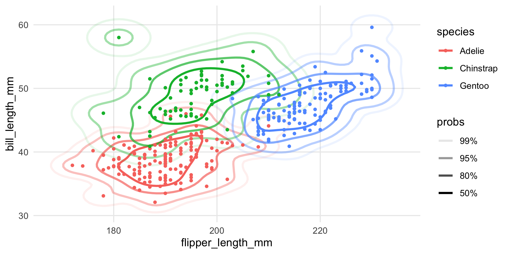
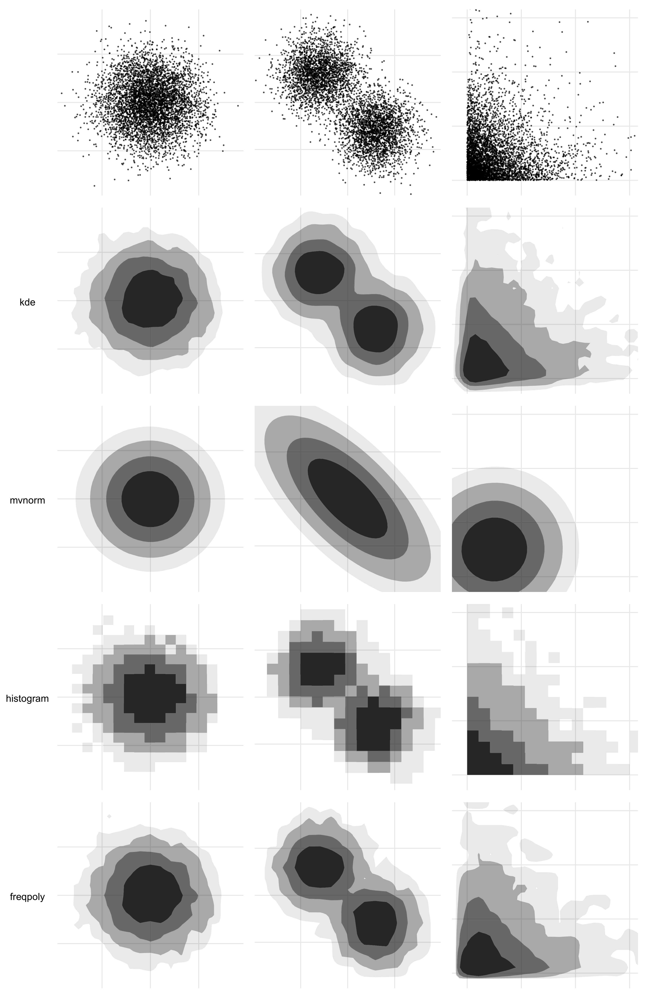

ggdensity extends ggplot2 providing more interpretable visualizations of density estimates based on highest density regions (HDRs). ggdensity offers drop-in replacements for ggplot2 functions:
- instead of
ggplot2::geom_density_2d_filled(), useggdensity::geom_hdr(); - instead of
ggplot2::geom_density_2d(), useggdensity::geom_hdr_lines().
Also included are the functions geom_hdr_fun() and geom_hdr_lines_fun() for plotting HDRs of user-specified bivariate probability density functions.
Installation
ggdensity is available on CRAN and can be installed with:
install.packages("ggdensity")Alternatively, you can install the latest development version from GitHub with:
if (!requireNamespace("remotes")) install.packages("remotes")
remotes::install_github("jamesotto852/ggdensity")
geom_density_2d_filled() vs. geom_hdr()
The standard way to visualize the joint distribution of two continuous variables in ggplot2 is to use ggplot2::geom_density_2d() or geom_density_2d_filled(). Here’s an example:
library("ggplot2"); theme_set(theme_minimal())
theme_update(panel.grid.minor = element_blank())
library("ggdensity")
library("patchwork")
df <- data.frame("x" = rnorm(1000), "y" = rnorm(1000))
p <- ggplot(df, aes(x, y)) + coord_equal()
p + geom_density_2d_filled()
While it’s a nice looking plot, it isn’t immediately clear how we should understand it. That’s because geom_density_2d_filled() generates its contours as equidistant level sets of the estimated bivariate density, i.e. taking horizontal slices of the 3d surface at equally-spaced heights, and projecting the intersections down into the plane. So you get a general feel of where the density is high, but not much else. To interpret a contour, you would need to multiply its height by the area it bounds, which of course is very challenging to do by just looking at it.
geom_hdr() tries to get around this problem by presenting you with regions of the estimated distribution that are immediately interpretable:
p + geom_hdr()
probs here tells us the probability bounded by the corresponding region, and the regions are computed to be the smallest such regions that bound that level of probability; these are called highest density regions or HDRs. By default, the plotted regions show the , , , and HDRs of the estimated density, but this can be changed with the probs argument to geom_hdr(). Notice that your take-away from the plot made with geom_density_2d_filled() is subtlely yet significantly different than that of the plot made by geom_hdr().
Visualizing subpopulations and geom_hdr_lines()
ggdensity’s functions were designed to be seamlessly consistent with the rest of the ggplot2 framework. As a consequence, pretty much everything you would expect to just work does. (Well, we hope! Let us know if that’s not true.)
For example, because geom_hdr() maps probability to the alpha aesthetic, the fill and color aesthetics are available for mapping to variables. You can use them to visualize subpopulations in your data. For example, in the penguins data from palmerpenguins you may want to look at how the relationship between bill length and flipper length changes across different species of penguins. Here’s one way you could look at that:
library("palmerpenguins")
ggplot(penguins, aes(flipper_length_mm, bill_length_mm, fill = species)) +
geom_hdr(xlim = c(160, 240), ylim = c(30, 70)) +
geom_point(shape = 21)
Nice, but a bit overplotted. To alleviate overplotting, we can use geom_hdr_lines():
ggplot(penguins, aes(flipper_length_mm, bill_length_mm, color = species)) +
geom_hdr_lines(xlim = c(160, 240), ylim = c(30, 70)) +
geom_point(size = 1)
Or you could facet the plot:
ggplot(penguins, aes(flipper_length_mm, bill_length_mm, fill = species)) +
geom_hdr(xlim = c(160, 240), ylim = c(30, 70)) +
geom_point(shape = 21) +
facet_wrap(vars(species))
The main point here is that you should really think of geom_hdr() and geom_hdr_lines() as drop-in replacements for functions like geom_density_2d_filled(), geom_density2d(), and so on, and you can expect all of the rest of the ggplot2 stuff to just work.
A deeper cut illustrating ggplot2 integration
The underlying stat used by geom_hdr() creates the computed variable probs that can be mapped in the standard way you map computed variables in ggplot2, with after_stat().
For example, geom_hdr() and geom_hdr_lines() map probs to the alpha aesthetic by default. But you can override it like this, just be sure to override the alpha aesthetic by setting alpha = 1.
ggplot(faithful, aes(eruptions, waiting)) +
geom_hdr(
aes(fill = after_stat(probs)),
alpha = 1, xlim = c(0, 8), ylim = c(30, 110)
)
ggplot(faithful, aes(eruptions, waiting)) +
geom_hdr_lines(
aes(color = after_stat(probs)),
alpha = 1, xlim = c(0, 8), ylim = c(30, 110)
)Statistics details
In addition to trying to make the visuals clean and the functions what you would expect as a ggplot2 user, we’ve spent considerable effort in trying to ensure that the graphics you’re getting with ggdensity are statistically rigorous and provide a range of estimation options for more detailed control.
To that end, you can pass a method argument into geom_hdr() and geom_hdr_lines() that allows you to specify various nonparametric and parametric ways to estimate the underlying bivariate distribution, and we have plans for even more. Each of the estimators below offers advantages in certain contexts. For example, histogram estimators result in HDRs that obey constrained supports. Normal estimators can be helpful in providing simplified visuals that give the viewer a sense of where the distributions are, potentially at the expense of over-simplifying and removing important features of how the variables (co-)vary.

The method argument may be specified either as a character vector (method = "kde") or as a function call (method = method_kde()). When a function call is used, it may be possible to specify parameters governing the density estimation procedure. For example, method_kde() accepts parameters h and adjust, both related to the kernel’s bandwidth. For details see ?method_kde or vignette("method", "ggdensity").
If you know your PDF
The above discussion has focused around densities that are estimated from data. But in some instances, you have the distribution in the form of a function that encodes the joint PDF. In those circumstances, you can use geom_hdr_fun() and geom_hdr_lines_fun() to make the analogous plots. These functions behave similarly to geom_function() from ggplot2, accepting the argument fun specifying the pdf to be summarized. Here’s an example:
f <- function(x, y) dnorm(x) * dgamma(y, 5, 3)
ggplot() +
geom_hdr_fun(fun = f, xlim = c(-4, 4), ylim = c(0, 5))
Visualizing custom parametric density estimates with geom_hdr_fun()
In addition to all of the methods of density estimation available with geom_hdr(), one of the perks of having geom_hdr_fun() is that it allows you to plot parametric densities that you estimate outside the ggdensity framework. The basic idea is that you fit your distribution outside ggdensity calls with your method of choice, say maximum likelihood, and then plug the maximum likelihood estimate into the density formula to obtain a function to plug into geom_hdr_fun().
Here’s an example of how you can do that that assuming that the underlying data are independent and exponentially distributed with unknown rates.
set.seed(123)
th <- c(3, 5)
df <- data.frame("x" = rexp(1000, th[1]), "y" = rexp(1000, th[2]))
# construct the likelihood function
l <- function(th) {
log_liks <- apply(df, 1, function(xy) {
dexp(xy[1], rate = th[1], log = TRUE) +
dexp(xy[2], rate = th[2], log = TRUE)
})
sum(log_liks)
}
# compute the mle
(th_hat <- optim(c(2, 2), l, control = list(fnscale = -1))$par)
#> [1] 2.912736 5.032125
# construct the parametric density estimate
f <- function(x, y, th) dexp(x, th[1]) * dexp(y, th[2])
# pass estimated density into geom_hdr_fun()
ggplot(df, aes(x, y)) +
geom_hdr_fun(fun = f, args = list(th = th_hat)) +
geom_point(shape = 21, fill = "lightgreen", alpha = .25) +
coord_equal()
Other perks
geom_hdr_points()
Inspired by ggpointdensity, ggdensity provides a scatterplot geom whereby the individual data points can be seen simultaneously with HDRs. This is most useful in situations with significant overplotting.
p_points <- ggplot(diamonds, aes(carat, price)) +
geom_point()
p_hdr_points <- ggplot(diamonds, aes(carat, price)) +
geom_hdr_points()
p_points + p_hdr_points
geom_hdr_rug()
Rug plots are standard additions to plots with densities:
ggplot(cars, aes(speed, dist)) +
geom_density_2d() +
geom_point() +
geom_rug()
With HDRs, these can be used to visualize joint and marginal HDRs simultaneously. The marginal HDRs are computed off of only the corresponding x and y aesthetic variables. Note that these can be substantially different: the joint HDR is not the product of the marginal HDRs.
ggplot(cars, aes(speed, dist)) +
geom_hdr() +
geom_point(color = "red") +
geom_hdr_rug()Like geom_rug(), these can be placed on different sides of the object:
ggplot(cars, aes(speed, dist)) +
geom_hdr() +
geom_point(color = "red") +
geom_hdr_rug(sides = "tr", outside = TRUE) +
coord_cartesian(clip = "off")We sometimes find it easier to view if the rug intervals are colored:
ggplot(cars, aes(speed, dist)) +
geom_hdr() +
geom_point(color = "red") +
geom_hdr_rug(aes(fill = after_stat(probs)), length = unit(.2, "cm"), alpha = 1) +
scale_fill_viridis_d(option = "magma", begin = .8, end = 0)
Numerical summaries of HDRs
It is possible to access numerical summaries of the estimated densities and HDRs computed by ggdensity with get_hdr():
df <- data.frame(x = rnorm(1e3), y = rnorm(1e3))
res <- get_hdr(df, method = "kde")
str(res)
#> List of 3
#> $ df_est:'data.frame': 10000 obs. of 5 variables:
#> ..$ x : num [1:10000] -3.05 -2.99 -2.93 -2.86 -2.8 ...
#> ..$ y : num [1:10000] -3.13 -3.13 -3.13 -3.13 -3.13 ...
#> ..$ fhat : num [1:10000] 1.58e-09 4.49e-09 1.30e-08 3.66e-08 9.83e-08 ...
#> ..$ fhat_discretized: num [1:10000] 6.43e-12 1.83e-11 5.29e-11 1.49e-10 4.00e-10 ...
#> ..$ hdr : num [1:10000] 1 1 1 1 1 1 1 1 1 1 ...
#> $ breaks: Named num [1:5] 0.00257 0.00887 0.02929 0.07574 Inf
#> ..- attr(*, "names")= chr [1:5] "99%" "95%" "80%" "50%" ...
#> $ data :'data.frame': 1000 obs. of 3 variables:
#> ..$ x : num [1:1000] -0.817 -2.463 -1.343 0.136 0.883 ...
#> ..$ y : num [1:1000] -0.5277 -1.4411 -1.9568 0.0287 1.5382 ...
#> ..$ hdr_membership: num [1:1000] 0.5 0.99 0.95 0.5 0.8 0.99 0.8 0.95 0.5 0.5 ...Similarly, there is get_hdr_1d() for univariate data:
x <- rnorm(1e3)
res <- get_hdr_1d(x, method = "kde")
str(res)
#> List of 3
#> $ df_est:'data.frame': 512 obs. of 4 variables:
#> ..$ x : num [1:512] -2.89 -2.88 -2.86 -2.85 -2.84 ...
#> ..$ fhat : num [1:512] 0.00441 0.0046 0.00479 0.00499 0.0052 ...
#> ..$ fhat_discretized: num [1:512] 5.46e-05 5.70e-05 5.94e-05 6.19e-05 6.45e-05 ...
#> ..$ hdr : num [1:512] 1 1 1 1 1 1 1 1 1 1 ...
#> $ breaks: Named num [1:5] 0.0141 0.0563 0.1757 0.317 Inf
#> ..- attr(*, "names")= chr [1:5] "99%" "95%" "80%" "50%" ...
#> $ data :'data.frame': 1000 obs. of 2 variables:
#> ..$ x : num [1:1000] -0.4301 -1.5792 0.1929 -0.4973 -0.0859 ...
#> ..$ hdr_membership: num [1:1000] 0.5 0.95 0.5 0.5 0.5 0.5 0.8 0.5 0.5 0.99 ...For details on the objects returned by these functions, see ?get_hdr and ?get_hdr_1d.
A caveat and recommendation for cropped HDRs
geom_hdr() and related functions were written with the intent of playing nicely with ggplot2, so that what the typical ggplot2 user would expect from the rest of the ggplot2 ecosystem would work in the same way with ggdensity.
One place where the effect isn’t ideal is in the limits of the x and y scales. Without getting into too much detail, these key off of the observed points themselves, and not properties of the estimated density. This is consistent with geom_density_2d() and stat_smooth(), for example: computed aesthetics don’t extend past the range of the data.
One potential danger here is that the estimated HDRs are computed based on not the estimated density directly, but a discretization of it. This is how all non-parametric density estimation in R works, e.g. MASS::kde2d(), and most parametric density estimation, too. In other words: the density estimate itself is only known at points on a grid over the x-y aesthetic space. As a consequence, if that range is too small, it’s possible that a probabilistically non-trivial proportion of the density is excluded from the computations, biasing the resulting HDRs.
The punch line is that whenever you see an HDR getting truncated by the window of the plot, it’s probably a good idea to manually increase the aesthetic limits and use coord_cartesian() to zoom in as needed. Here’s an example using the previously created graphic. The limits given to coord_cartesian() and the call to scale_y_continuous() is simply an effort to make the third plot comparable to the first.
Note: The support of the data isn’t respected here-the estimated density doesn’t know speed can’t go negative. That’s not an artifact of the effect described above, that’s just because that’s what KDE’s do.
p1 <- ggplot(cars, aes(speed, dist)) +
geom_hdr() +
geom_point(color = "red") +
guides(alpha = "none") +
ggtitle("Default geom_hdr()")
p2 <- ggplot(cars, aes(speed, dist)) +
geom_hdr(xlim = c(-20, 50), ylim = c(-40, 140)) +
geom_point(color = "red") +
guides(alpha = "none") +
ggtitle("Manually set xlim, ylim")
p3 <- ggplot(cars, aes(speed, dist)) +
geom_hdr(xlim = c(-20, 50), ylim = c(-40, 140)) +
geom_point(color = "red") +
guides(alpha = "none") +
scale_y_continuous(breaks = 25*(0:5)) +
coord_cartesian(xlim = c(4, 25), ylim = c(-1, 120)) +
ggtitle("Zoom with coord_cartesian()")
(p1 / p2 / p3) & theme(title = element_text(size = 9))
Related projects
There are a few other great packages out there you should know about if you’re interested in ggdensity.
The ggdist package provides several flexible geoms for visualizing distributions of data, mostly univariate data.
The hdrcde package allows you to make bivariate HDR plots as well. At the surface, the main difference is that hdrcde doesn’t use ggplot2 graphics; however, under the hood there are many more differences. (More coming on explaining these discrepancies.)
The code illustrating the two strategies is quite simple, but trying to make the graphics more directly comparable requires some effort. Here’s a pretty good rendition on the faithful dataset, which has 272 observations.
p_hdr_scale <- ggplot(faithful, aes(eruptions, waiting)) +
geom_hdr(
xlim = scales::expand_range(range(faithful$eruptions), mul = .25),
ylim = scales::expand_range(range(faithful$waiting), mul = .25)
) +
geom_point(color = "red") +
scale_x_continuous(breaks = 0:6) +
scale_y_continuous(breaks = (3:10)*10) +
guides(alpha = "none")
den <- with(faithful,
MASS::kde2d(eruptions, waiting, n = 100, lims = c(0,6,30,105))
)
if (!requireNamespace("hdrcde")) install.packages("hdrcde")
library("hdrcde")
p_den <- ~ with(faithful,
plot(
hdr.2d(eruptions, waiting, prob = c(50, 80, 95, 99), den = den),
pointcol = "red",
show.points = TRUE,
xlim = c(0, 6),
ylim = c(30, 105)
)
)
par(mar = c(0,1.75,0,0), bg = NA)
p_hdr_scale +
coord_cartesian(xlim = c(0, 6), ylim = c(30, 105), expand = FALSE) +
wrap_elements(panel = p_den, clip = FALSE)
These look quite different, and they are. It’s worth noting that even within hdrcde there is variability as well:
par(mar = c(3, 3, 1, 1) + 0.1, mfrow = c(1, 2))
with(faithful,
plot(
hdr.2d(eruptions, waiting, prob = c(50, 80, 95, 99),
kde.package = "ash", xextend = .20),
pointcol = "red",
show.points = TRUE,
xlim = c(0, 6),
ylim = c(30, 105)
)
)
with(faithful,
plot(
hdr.2d(eruptions, waiting, prob = c(50, 80, 95, 99),
kde.package = "ks", xextend = .20),
pointcol = "red",
show.points = TRUE,
xlim = c(0, 6),
ylim = c(30, 105)
)
)
gghdr is somewhat of a ggplot2 port of hdrcde, developed by some of the same team members. In some ways, it’s very similar to ggdensity. For example, it contains a function gghdr::geom_hdr_rug() that does effectively the same as ggdensity::geom_hdr_rug(); it implements a kind of ggdensity::geom_hdr_pointdensity() via a function gghdr::hdr_bin() plus the color aesthetic to geom_point(); and it provides a boxplot alternative gghdr::geom_hdr_boxplot(). To the extent the similarities between ggdensity and hdrcde/gghdr exist (and they obviously do), they are an example of convergent evolution. The present authors only discovered those projects after writing most of ggdensity, unfortunately. Interestingly, we also had designs on the CDE part as well (“conditional density estimation”, think models); however had not implemented it before seeing hdrcde. You can expect those to come down the road.
Perhaps the most important difference between ggdensity and gghdr is that the latter doesn’t implement bivariate HDRs in the ggplot2 framework, which was the original motivation of ggdensity. For that purpose, it seems the only project available is ggdensity.